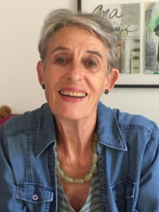
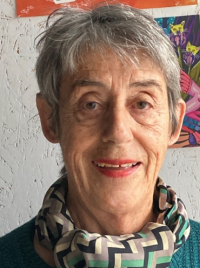
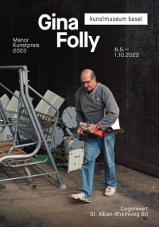
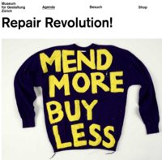
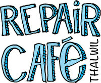

Liebe Quasitutto Mitglieder, Kundinnen, Freunde und Sympathisantinnen
Nach 12-jährigem Bestehen finden wir es im Vorstand an der Zeit, euch einen Einblick hinter die Kulissen unseres Verein-Innenlebens zu geben. Weiter ist es uns ein Anliegen, generell über die Entwicklung der Reparaturkultur auf unserem Planeten zu berichten. Statt Newsletter nennen wir unser Nachrichtengefäss „Neues von Quasitutto“.
Den Beginn machen wir mit einem internen Steckbrief über unsere zwei Frauen Lise Wallace und Stephanie Rudin. Die beiden Schwestern sind das Herzstück unseres Betriebslebens, ohne die beiden geht gar nichts.
Alle Aufträge wie Reparaturen, Entsorgungen, Anfragen jeglicher Art, werden von den zwei Frauen entgegengenommen, geprüft, ob diese in unseren Kompetenzbereich passen und schliesslich an die entsprechenden MitarbeiterInnen zur Ausführung weitergeleitet.
Es handelt sich dabei also um die entscheidende Schaltstelle zwischen Kundschaft und Mitarbeiterteam.
Ihre Aufträge erreichen uns über vier mögliche Wege:
- Über telefonische Anfrage
- Über Email-Anfrage
- Über direkten Kontakt in unserer Werkstatt
- Über direkten Kontakt in der Buchhandlung El Liesyum
Sowohl Lise als auch Stephanie sind Frauen der ersten Stunde, d.h. sie sind seit 12 Jahren für unseren Verein aktiv.
Ihre Tätigkeit als Auftragsvermittlerinnen ist reine Freiwilligenarbeit, die sie mit grossem Engagement und Verantwortungsbewusstsein ausführen.
Beide haben viel berufliche Lebenserfahrung im Umgang mit Menschen. Mit ihren guten kommunikativen Kompetenzen prägen sie wesentlich die Atmosphäre in unserem Verein.
Steckbriefe
Lise Wallace |
Lise hat ursprünglich eine Ausbildung als Kindergärtnerin am Seminar in Basel gemacht. Nach zweijähriger Ausübung ihres Berufes in Baselland hat sie ihre Neugier für andere Menschen und Kulturen in ferne Länder gezogen. Sie lebte und arbeitete in England, Israel, Italien und Griechenland, hat mit Kindern gearbeitet, neue Sprachen gelernt und landete schliesslich in den USA, wohin sie die Liebe gelockt hatte. Über 20 Jahre lebte und arbeitete sie dort mit Kindern mit unterschiedlichen Behinderungen. Gleichzeitig liess sie sich zur Massage-Therapeutin ausbilden und fand in der Arbeit als Körpertherapeutin Erfüllung. 1990 kehrte sie in die Schweiz zurück, wo sie in der Gruppenschule Thalwil während 16 Jahren als Mittagsbetreuerin wirkte. Daneben baute sie eine Praxis als Massage-Therapeutin auf. 2008 wurde sie pensioniert. Von Anfang an fand sie in unserem Verein Quasitutto einen Ort, wo sie ihre Fähigkeiten einbringen und weiter entwickeln konnte. Seit Beginn engagierte sie sich in unserem Vorstand, übernahm selber kleine Aufträge für Kunden, z.B. Katzen hüten, einfache Gartenarbeiten oder Kinder zum Hort begleiten. |
Stephanie Rudin |
Stephanie liess sich bei Radio Schweiz AG (heute Skyguide) zur Fernemeldeassistentin ausbilden. Später folgte eine weitere Ausbildung zur Flugverkehrsleiterin. Sie war die erste Frau, die im Tower des Flughafens Kloten tätig war. Nach der Lehre war sie ein Jahr lang als Aupair in England tätig und danach bereiste sie ein halbes Jahr lang Australien. Nach den Auslandaufenthalten orientierte sie sich beruflich neu. Als anfänglich einfache kaufmännische Angestellte erweiterte sie kontinuierlich ihre Kompetenzen. Sie übernahm immer mehr Verantwortung und konnte ihre Fähigkeiten in Koordination, Disposition und Kommunikation voll entfalten. Ihre Interessengebiete waren vielfältig in den Bereichen Innenarchitektur, Werbung, Bankwesen und Kunst. Nach der Pensionierung hat sich Stephanie in verschiedenen Vereinen aktiv engagiert, z.B. im Verein Kultur und in unserem Verein Quasitutto. Nebst dem Aufbau des Vereins übernahm sie auch kleinere Aufträge für unsere Kunden. Ihre Hobbies: Stephanie ist eine passionierte Gärtnerin, kocht fürs Leben gern und gut für sich und andere, liest leidenschaftlich Bücher und hört gerne Musik. |
Stephanie und Lise ist es ein grosses Anliegen, dass wir lernen sorgfältig mit unseren Ressourcen umzugehen.
Sie wünschen sich, dass sich jüngere Menschen für das Konzept von Quasitutto begeistern lassen und mit ihrem Mitwirken den Fortbestand des Vereins gewährleisten.
Weitere allgemeine Informationen über uns: https://www.quasitutto.ch
Weiteres
Ganz besonders machen wir Sie auf die folgenden Ausstellungen aufmerksam:
|
https://kunstmuseumbasel.ch/de/ausstellungen/2023/gina-folly
Wir hatten das Glück, dass die Fotografin und Künstlerin, Gina Folly, unseren Verein als Sujet für ihre Arbeit im Rahmen des Manorpreises gewählt hat. Sie liess sich von unserer Kernidee „Gebrauchtwerden und in Gebrauch Sein von Menschen und Dingen“ begeistern und portraitierte einige unserer MitarbeiterInnen in Aktion. Die Ausstellung findet vom 6.5.-1.10.23 im Kunstmuseum Basel/Gegenwart statt. |
 José in Aktion |
| https://museum-gestaltung.ch/de/ausstellung/repair-revolution
Eine Revolution gegen die Wegwerfgesellschaft mit ihren fatalen Auswirkungen für unseren Planeten. Die Ausstellung präsentiert eine Vision einer Reparaturgesellschaft und untersucht, welche Rolle das Design auf dem Weg dahin spielt. |
 |
|
Und schliesslich weisen wir auf die nächste Veranstaltung des Repair-Cafés Thalwil hin, die wie immer in der Schützenhalle in Thalwil stattfindet. (1. Juli, 12:00 bis 16:00) https://www.repaircafe-thalwil.ch |
 |
Gerne können Sie unser Neues von Quasitutto auch an Interessierte, Freunde und Bekannte weiterleiten. Wir erhalten auch gerne Anregungen, Kritik und Tipps.
Reparaturfreudige Grüsse,
Das Quasitutto-Team
Sollte Ihnen Neues von Quasitutto nicht gefallen, können Sie es hier abbestellen.